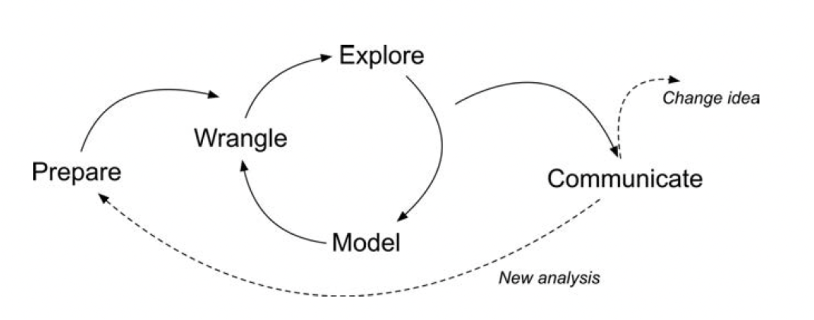
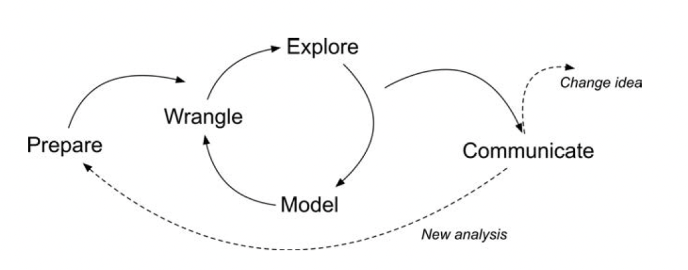
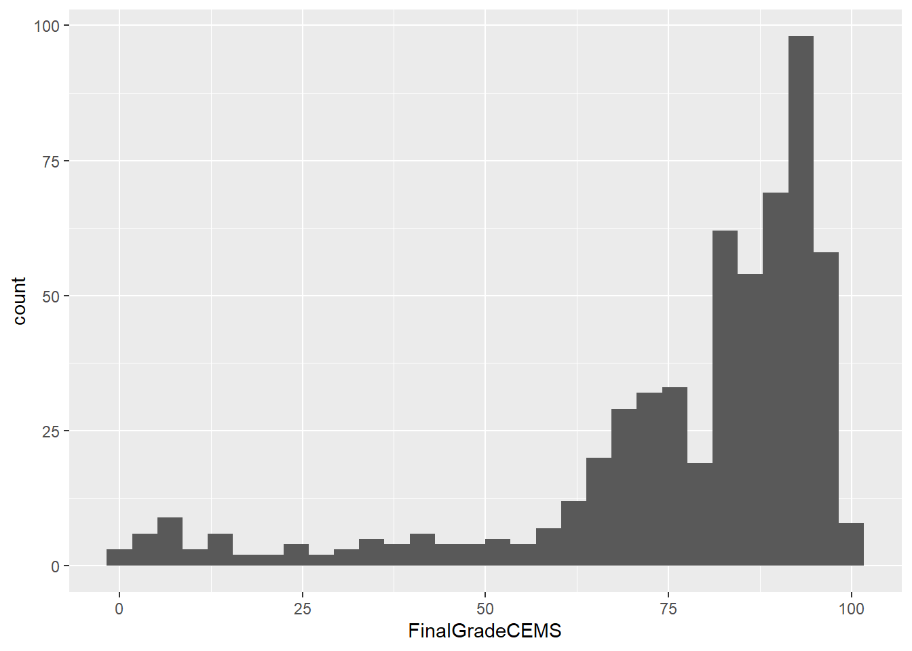
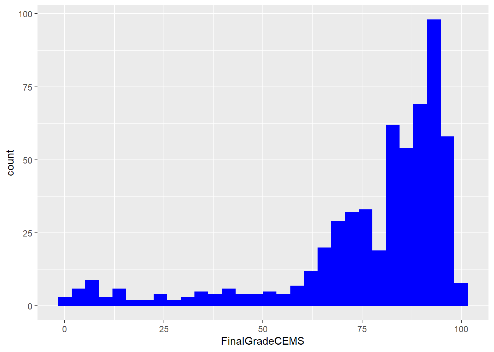
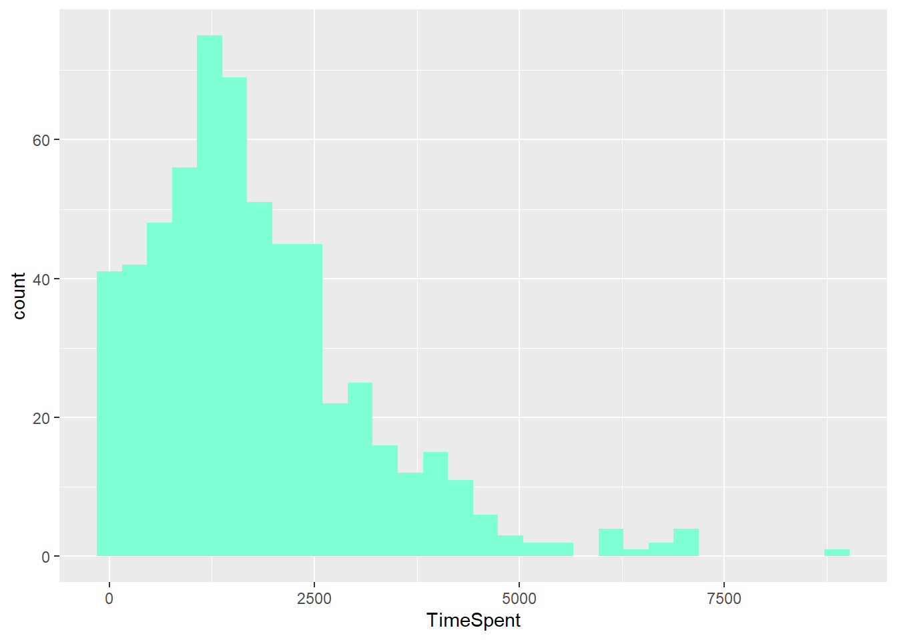
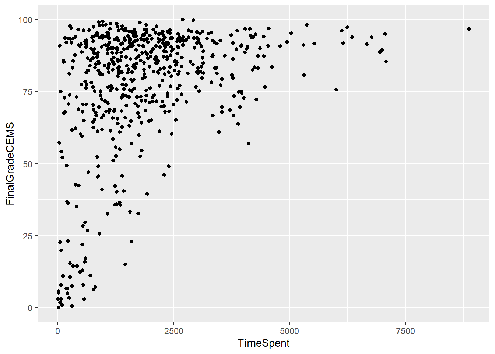

knitr::include_graphics("Img/research-workflow.png")
This activity is prepared to warm-up your understanding of LA workflow. Through this exercise, we will practice basics of how RStudio works. In all of our practices, we will follow the LA workflow.
In the R tutorial toolkit and case study week, we will be using a quarto markdown file, the extension of the file is “.qmd”. Unlike R markdown, Quarto documents are fully reproducible and support dozens of output formats, like PDFs, Word files, presentations, and more. In this document, you will see, we’re using visual mode to see the general parts.
There are two keys to your use of Quarto for this activity:
knitr::include_graphics("Img/research-workflow.png")
Last week, in the class, we talked about the data-intensive research workflow.As we mentioned a couple of times, we will follow this workflow to present our research approach.
Let’s get started.
As a first step in the data-intensive research workflow, we will need to define our research question(s) and need to understand where the data comes from (Krumm, 2018).
For this work, we will work with data come from an unpublished research study, which utilized a number of different data sources to understand high school students’ motivation within the context of online courses.
“Is there a relationship between the time students spend on a course and their final course grade?”
For our analysis, we will need certain packages.One of the most common package is “Tidyverse” package. This package is actually a collection of R packages designed for wrangling and exploring data and which all share an underlying design philosophy, grammar, and data structure.
knitr::include_graphics("Img/tidyverse.png")
Through this class, we will have a chance to try different libraries in the tidyverse package. Let’s install our tidyverse package.
install.packages("tidyverse")We installed the package, what do we need to do now for using this package?
library(tidyverse)── Attaching core tidyverse packages ──────────────────────── tidyverse 2.0.0 ──
✔ dplyr 1.1.3 ✔ readr 2.1.4
✔ forcats 1.0.0 ✔ stringr 1.5.0
✔ ggplot2 3.4.3 ✔ tibble 3.2.1
✔ lubridate 1.9.2 ✔ tidyr 1.3.0
✔ purrr 1.0.2
── Conflicts ────────────────────────────────────────── tidyverse_conflicts() ──
✖ dplyr::filter() masks stats::filter()
✖ dplyr::lag() masks stats::lag()
ℹ Use the conflicted package (<http://conflicted.r-lib.org/>) to force all conflicts to become errorsWe will also use another package called “skimr”. This is a handy package that provides summary statistics that you can skim quickly to understand your data. We’ll be using this later in the Explore section.
#install the {skimr} package below.
install.packages("skimr")#load the {skimr} package below.
library(skimr)The data we’ll explore in this class were originally collected for a unpublished research study and utilized a number of different data sources to understand students’ course related motivation. These courses were designed and taught by instructors through a state-wide online course provider designed to supplement-but not replace-students’ enrollment in their local school.
The data used in this case study has already been “wrangled” quite a bit, but the original datasets included:
If you are more interested in learning more about these datasets, you can visit Chapter 7 from your book, Data Science in Education Using R.
#load the sci-online-classes.cvs data
sci_data<-read_csv("Data/sci-online-classes.csv")Rows: 603 Columns: 30
── Column specification ────────────────────────────────────────────────────────
Delimiter: ","
chr (6): course_id, subject, semester, section, Gradebook_Item, Gender
dbl (23): student_id, total_points_possible, total_points_earned, percentage...
lgl (1): Grade_Category
ℹ Use `spec()` to retrieve the full column specification for this data.
ℹ Specify the column types or set `show_col_types = FALSE` to quiet this message.Why do you think we included data/ before our sci-online-classes.csv file? Why quotation marks?
Add your responses after the dashes below:
Hint: check the files panel.
Let’s quickly check our data.
view(sci_data)
sci_data# A tibble: 603 × 30
student_id course_id total_points_possible total_points_earned
<dbl> <chr> <dbl> <dbl>
1 43146 FrScA-S216-02 3280 2220
2 44638 OcnA-S116-01 3531 2672
3 47448 FrScA-S216-01 2870 1897
4 47979 OcnA-S216-01 4562 3090
5 48797 PhysA-S116-01 2207 1910
6 51943 FrScA-S216-03 4208 3596
7 52326 AnPhA-S216-01 4325 2255
8 52446 PhysA-S116-01 2086 1719
9 53447 FrScA-S116-01 4655 3149
10 53475 FrScA-S116-02 1710 1402
# ℹ 593 more rows
# ℹ 26 more variables: percentage_earned <dbl>, subject <chr>, semester <chr>,
# section <chr>, Gradebook_Item <chr>, Grade_Category <lgl>,
# FinalGradeCEMS <dbl>, Points_Possible <dbl>, Points_Earned <dbl>,
# Gender <chr>, q1 <dbl>, q2 <dbl>, q3 <dbl>, q4 <dbl>, q5 <dbl>, q6 <dbl>,
# q7 <dbl>, q8 <dbl>, q9 <dbl>, q10 <dbl>, TimeSpent <dbl>,
# TimeSpent_hours <dbl>, TimeSpent_std <dbl>, int <dbl>, pc <dbl>, uv <dbl>What do you notice about this dataset? What do you wonder? Add one or two thoughts after the dash below:
There are other ways to inspect your data; the glimpse() function provides one such way. Let’s take a glimpse at our data.
glimpse(sci_data)Rows: 603
Columns: 30
$ student_id <dbl> 43146, 44638, 47448, 47979, 48797, 51943, 52326,…
$ course_id <chr> "FrScA-S216-02", "OcnA-S116-01", "FrScA-S216-01"…
$ total_points_possible <dbl> 3280, 3531, 2870, 4562, 2207, 4208, 4325, 2086, …
$ total_points_earned <dbl> 2220, 2672, 1897, 3090, 1910, 3596, 2255, 1719, …
$ percentage_earned <dbl> 0.6768293, 0.7567261, 0.6609756, 0.6773345, 0.86…
$ subject <chr> "FrScA", "OcnA", "FrScA", "OcnA", "PhysA", "FrSc…
$ semester <chr> "S216", "S116", "S216", "S216", "S116", "S216", …
$ section <chr> "02", "01", "01", "01", "01", "03", "01", "01", …
$ Gradebook_Item <chr> "POINTS EARNED & TOTAL COURSE POINTS", "ATTEMPTE…
$ Grade_Category <lgl> NA, NA, NA, NA, NA, NA, NA, NA, NA, NA, NA, NA, …
$ FinalGradeCEMS <dbl> 93.45372, 81.70184, 88.48758, 81.85260, 84.00000…
$ Points_Possible <dbl> 5, 10, 10, 5, 438, 5, 10, 10, 443, 5, 12, 10, 5,…
$ Points_Earned <dbl> NA, 10.00, NA, 4.00, 399.00, NA, NA, 10.00, 425.…
$ Gender <chr> "M", "F", "M", "M", "F", "F", "M", "F", "F", "M"…
$ q1 <dbl> 5, 4, 5, 5, 4, NA, 5, 3, 4, NA, NA, 4, 3, 5, NA,…
$ q2 <dbl> 4, 4, 4, 5, 3, NA, 5, 3, 3, NA, NA, 5, 3, 3, NA,…
$ q3 <dbl> 4, 3, 4, 3, 3, NA, 3, 3, 3, NA, NA, 3, 3, 5, NA,…
$ q4 <dbl> 5, 4, 5, 5, 4, NA, 5, 3, 4, NA, NA, 5, 3, 5, NA,…
$ q5 <dbl> 5, 4, 5, 5, 4, NA, 5, 3, 4, NA, NA, 5, 4, 5, NA,…
$ q6 <dbl> 5, 4, 4, 5, 4, NA, 5, 4, 3, NA, NA, 5, 3, 5, NA,…
$ q7 <dbl> 5, 4, 4, 4, 4, NA, 4, 3, 3, NA, NA, 5, 3, 5, NA,…
$ q8 <dbl> 5, 5, 5, 5, 4, NA, 5, 3, 4, NA, NA, 4, 3, 5, NA,…
$ q9 <dbl> 4, 4, 3, 5, NA, NA, 5, 3, 2, NA, NA, 5, 2, 2, NA…
$ q10 <dbl> 5, 4, 5, 5, 3, NA, 5, 3, 5, NA, NA, 4, 4, 5, NA,…
$ TimeSpent <dbl> 1555.1667, 1382.7001, 860.4335, 1598.6166, 1481.…
$ TimeSpent_hours <dbl> 25.91944500, 23.04500167, 14.34055833, 26.643610…
$ TimeSpent_std <dbl> -0.18051496, -0.30780313, -0.69325954, -0.148446…
$ int <dbl> 5.0, 4.2, 5.0, 5.0, 3.8, 4.6, 5.0, 3.0, 4.2, NA,…
$ pc <dbl> 4.50, 3.50, 4.00, 3.50, 3.50, 4.00, 3.50, 3.00, …
$ uv <dbl> 4.333333, 4.000000, 3.666667, 5.000000, 3.500000…head(sci_data)# A tibble: 6 × 30
student_id course_id total_points_possible total_points_earned
<dbl> <chr> <dbl> <dbl>
1 43146 FrScA-S216-02 3280 2220
2 44638 OcnA-S116-01 3531 2672
3 47448 FrScA-S216-01 2870 1897
4 47979 OcnA-S216-01 4562 3090
5 48797 PhysA-S116-01 2207 1910
6 51943 FrScA-S216-03 4208 3596
# ℹ 26 more variables: percentage_earned <dbl>, subject <chr>, semester <chr>,
# section <chr>, Gradebook_Item <chr>, Grade_Category <lgl>,
# FinalGradeCEMS <dbl>, Points_Possible <dbl>, Points_Earned <dbl>,
# Gender <chr>, q1 <dbl>, q2 <dbl>, q3 <dbl>, q4 <dbl>, q5 <dbl>, q6 <dbl>,
# q7 <dbl>, q8 <dbl>, q9 <dbl>, q10 <dbl>, TimeSpent <dbl>,
# TimeSpent_hours <dbl>, TimeSpent_std <dbl>, int <dbl>, pc <dbl>, uv <dbl>tail(sci_data)# A tibble: 6 × 30
student_id course_id total_points_possible total_points_earned
<dbl> <chr> <dbl> <dbl>
1 97150 PhysA-S216-01 2710 1803
2 97265 PhysA-S216-01 3101 2078
3 97272 OcnA-S216-01 2872 1733
4 97374 BioA-S216-01 8586 6978
5 97386 BioA-S216-01 2761 1937
6 97441 FrScA-S216-02 2607 2205
# ℹ 26 more variables: percentage_earned <dbl>, subject <chr>, semester <chr>,
# section <chr>, Gradebook_Item <chr>, Grade_Category <lgl>,
# FinalGradeCEMS <dbl>, Points_Possible <dbl>, Points_Earned <dbl>,
# Gender <chr>, q1 <dbl>, q2 <dbl>, q3 <dbl>, q4 <dbl>, q5 <dbl>, q6 <dbl>,
# q7 <dbl>, q8 <dbl>, q9 <dbl>, q10 <dbl>, TimeSpent <dbl>,
# TimeSpent_hours <dbl>, TimeSpent_std <dbl>, int <dbl>, pc <dbl>, uv <dbl>Generally, rows typically represent “cases”, the units that we measure, or the units on which we collect data. What counts as a “case” (and therefore what is represented as a row) varies by (and within) fields. There may be multiple types or levels of units studied in your field; listing more than one is fine! Also, please consider what columns-which usually represent variables-represent in your area of work and/or research.
How many “cases” or observations are in this dataset?
Pick two columns (or more) and write what you think it represents:
By wrangle, we refer to the process of cleaning and processing data, and, in some cases, merging (or joining) data from multiple sources. Often, this part of the process is very time-intensive! Wrangling your data into shape can itself be an important accomplishment! And documenting your code using R scripts or Markdown files will save yourself and others a great deal of time wrangling data in the future! There are great tools in R for data wrangling, especially through the use of {dplyr} R package which is part of the tidyverse.
Remember our research question, what we were interested in finding about this data?
Let’s practice selecting a few variables by introducing pipe operator, |>. Pipes are a powerful tool for combining a sequence of functions or processes.
Run the following code chunck to “pipe” our sci_data to the select() function include the following two variables as arguments:
FinalGradeCEMS (i.e., students’ final grades on a 0-100 point scale)
TimeSpent (i.e., the number of minutes they spent in the course’s learning management system)
sci_data|>
select(FinalGradeCEMS,TimeSpent)# A tibble: 603 × 2
FinalGradeCEMS TimeSpent
<dbl> <dbl>
1 93.5 1555.
2 81.7 1383.
3 88.5 860.
4 81.9 1599.
5 84 1482.
6 NA 3.45
7 83.6 1322.
8 97.8 1390.
9 96.1 1479.
10 NA NA
# ℹ 593 more rowsNotice how the number of columns (variables) is now different! Let’s check our data with View() function this time.
view(sci_data)A quick footnote about pipes: The original pipe operator, %>%, comes from the {magrittr} package but all packages in the tidyverse load %>% for you automatically, so you don’t usually load magrittr explicitly. The pipe has become such a useful and much used operator in R that it is now baked into R using the new and simpler native pipe |> operator. You can use both fairly interchangeably but there are a few differences between pipe operators.
Let’s exploring filtering variables. We will filter our data to view only the rows associated with students who earned a final grade (as a percentage) of 70 or 70% or higher.
sci_data|>
filter(FinalGradeCEMS>70)# A tibble: 438 × 30
student_id course_id total_points_possible total_points_earned
<dbl> <chr> <dbl> <dbl>
1 43146 FrScA-S216-02 3280 2220
2 44638 OcnA-S116-01 3531 2672
3 47448 FrScA-S216-01 2870 1897
4 47979 OcnA-S216-01 4562 3090
5 48797 PhysA-S116-01 2207 1910
6 52326 AnPhA-S216-01 4325 2255
7 52446 PhysA-S116-01 2086 1719
8 53447 FrScA-S116-01 4655 3149
9 53475 FrScA-S216-01 1209 977
10 54066 OcnA-S116-01 4641 3429
# ℹ 428 more rows
# ℹ 26 more variables: percentage_earned <dbl>, subject <chr>, semester <chr>,
# section <chr>, Gradebook_Item <chr>, Grade_Category <lgl>,
# FinalGradeCEMS <dbl>, Points_Possible <dbl>, Points_Earned <dbl>,
# Gender <chr>, q1 <dbl>, q2 <dbl>, q3 <dbl>, q4 <dbl>, q5 <dbl>, q6 <dbl>,
# q7 <dbl>, q8 <dbl>, q9 <dbl>, q10 <dbl>, TimeSpent <dbl>,
# TimeSpent_hours <dbl>, TimeSpent_std <dbl>, int <dbl>, pc <dbl>, uv <dbl>In the next code chunk, change the cut-off from 70% to some other value-larger or smaller (maybe much larger or smaller) - feel free to play around with the code a bit!
sci_data|>
filter(FinalGradeCEMS>60)# A tibble: 495 × 30
student_id course_id total_points_possible total_points_earned
<dbl> <chr> <dbl> <dbl>
1 43146 FrScA-S216-02 3280 2220
2 44638 OcnA-S116-01 3531 2672
3 47448 FrScA-S216-01 2870 1897
4 47979 OcnA-S216-01 4562 3090
5 48797 PhysA-S116-01 2207 1910
6 52326 AnPhA-S216-01 4325 2255
7 52446 PhysA-S116-01 2086 1719
8 53447 FrScA-S116-01 4655 3149
9 53475 FrScA-S216-01 1209 977
10 54066 OcnA-S116-01 4641 3429
# ℹ 485 more rows
# ℹ 26 more variables: percentage_earned <dbl>, subject <chr>, semester <chr>,
# section <chr>, Gradebook_Item <chr>, Grade_Category <lgl>,
# FinalGradeCEMS <dbl>, Points_Possible <dbl>, Points_Earned <dbl>,
# Gender <chr>, q1 <dbl>, q2 <dbl>, q3 <dbl>, q4 <dbl>, q5 <dbl>, q6 <dbl>,
# q7 <dbl>, q8 <dbl>, q9 <dbl>, q10 <dbl>, TimeSpent <dbl>,
# TimeSpent_hours <dbl>, TimeSpent_std <dbl>, int <dbl>, pc <dbl>, uv <dbl>What happens when you change the cut-off from 70 to something else?
The last function we’ll use for preparing tables in arrange. We’ll again use the pipe operator to combine this with arrange() function we used already -select(). We do this so we can view only time spent and final grades.
sci_data|>
select(FinalGradeCEMS,TimeSpent)|>
arrange(FinalGradeCEMS)# A tibble: 603 × 2
FinalGradeCEMS TimeSpent
<dbl> <dbl>
1 0 13.9
2 0.535 306.
3 0.903 88.5
4 1.80 44.7
5 2.93 57.7
6 3.01 571.
7 3.06 0.7
8 3.43 245.
9 5.04 202.
10 5.2 11.0
# ℹ 593 more rowsNote that arrange works by sorting values in ascending order (from lowest to highest); you can change this by using the desc() function as an argument with.
#let's change the order from asc to desc
sci_data|>
select(FinalGradeCEMS,TimeSpent)|>
arrange(desc(FinalGradeCEMS))# A tibble: 603 × 2
FinalGradeCEMS TimeSpent
<dbl> <dbl>
1 100 2689.
2 99.8 2921.
3 99.3 965.
4 99.1 879.
5 99.0 1770.
6 98.6 1138.
7 98.6 1270.
8 98.6 1273.
9 98.2 1902.
10 98.2 5373.
# ℹ 593 more rowsIn the next code chunk, replace FinalGradeCEMS that is used with both the select() and arrange() functions with a different variable in the dataset.
sci_data|>
select(course_id,TimeSpent)|>
arrange(desc(course_id))# A tibble: 603 × 2
course_id TimeSpent
<chr> <dbl>
1 PhysA-T116-01 2824.
2 PhysA-T116-01 1289.
3 PhysA-S216-01 719.
4 PhysA-S216-01 719.
5 PhysA-S216-01 1770.
6 PhysA-S216-01 2322.
7 PhysA-S216-01 4552.
8 PhysA-S216-01 2415.
9 PhysA-S216-01 610.
10 PhysA-S216-01 47
# ℹ 593 more rowsExploratory data analysis, or exploring your data, involves processes of describing your data (such as by calculating the means and standard deviations of numeric variables, or counting the frequency of categorical variables) and, often, visualizing your data. As we’ll learn in later in this class, the explore phase can also involve the process of “feature engineering,” or creating new variables within a dataset [@krumm2018]. In this section, we’ll quickly pull together some basic stats using a handy function from the {skimr} package, and introduce you to a basic data visualization “code template” for the {ggplot} package from the tidyverse.
Let’s repurpose what we learned from our wrangle section to select just a few variables and quickly gather some descriptive stats using the skim() function from the {skimr} package.
sci_data|>
select(FinalGradeCEMS,TimeSpent)|>
skim()| Name | select(sci_data, FinalGra… |
| Number of rows | 603 |
| Number of columns | 2 |
| _______________________ | |
| Column type frequency: | |
| numeric | 2 |
| ________________________ | |
| Group variables | None |
Variable type: numeric
| skim_variable | n_missing | complete_rate | mean | sd | p0 | p25 | p50 | p75 | p100 | hist |
|---|---|---|---|---|---|---|---|---|---|---|
| FinalGradeCEMS | 30 | 0.95 | 77.20 | 22.23 | 0.00 | 71.25 | 84.57 | 92.10 | 100.00 | ▁▁▁▃▇ |
| TimeSpent | 5 | 0.99 | 1799.75 | 1354.93 | 0.45 | 851.90 | 1550.91 | 2426.09 | 8870.88 | ▇▅▁▁▁ |
Copy the code from the chunk from above and use it as a template to explore some other variables of interest from our sci_data.
#use skim() to summarize other variables of your choosing.
sci_data|>
select(course_id,TimeSpent)|>
skim()| Name | select(sci_data, course_i… |
| Number of rows | 603 |
| Number of columns | 2 |
| _______________________ | |
| Column type frequency: | |
| character | 1 |
| numeric | 1 |
| ________________________ | |
| Group variables | None |
Variable type: character
| skim_variable | n_missing | complete_rate | min | max | empty | n_unique | whitespace |
|---|---|---|---|---|---|---|---|
| course_id | 0 | 1 | 12 | 13 | 0 | 26 | 0 |
Variable type: numeric
| skim_variable | n_missing | complete_rate | mean | sd | p0 | p25 | p50 | p75 | p100 | hist |
|---|---|---|---|---|---|---|---|---|---|---|
| TimeSpent | 5 | 0.99 | 1799.75 | 1354.93 | 0.45 | 851.9 | 1550.91 | 2426.09 | 8870.88 | ▇▅▁▁▁ |
What happens if simply feed the skim function the entire sci_data object? Give it a try!
#use skim() on the entire data frame
sci_data|>
skim()| Name | sci_data |
| Number of rows | 603 |
| Number of columns | 30 |
| _______________________ | |
| Column type frequency: | |
| character | 6 |
| logical | 1 |
| numeric | 23 |
| ________________________ | |
| Group variables | None |
Variable type: character
| skim_variable | n_missing | complete_rate | min | max | empty | n_unique | whitespace |
|---|---|---|---|---|---|---|---|
| course_id | 0 | 1 | 12 | 13 | 0 | 26 | 0 |
| subject | 0 | 1 | 4 | 5 | 0 | 5 | 0 |
| semester | 0 | 1 | 4 | 4 | 0 | 3 | 0 |
| section | 0 | 1 | 2 | 2 | 0 | 4 | 0 |
| Gradebook_Item | 0 | 1 | 9 | 35 | 0 | 3 | 0 |
| Gender | 0 | 1 | 1 | 1 | 0 | 2 | 0 |
Variable type: logical
| skim_variable | n_missing | complete_rate | mean | count |
|---|---|---|---|---|
| Grade_Category | 603 | 0 | NaN | : |
Variable type: numeric
| skim_variable | n_missing | complete_rate | mean | sd | p0 | p25 | p50 | p75 | p100 | hist |
|---|---|---|---|---|---|---|---|---|---|---|
| student_id | 0 | 1.00 | 86069.54 | 10548.60 | 43146.00 | 85612.50 | 88340.00 | 92730.50 | 97441.00 | ▁▁▁▃▇ |
| total_points_possible | 0 | 1.00 | 4274.41 | 2312.74 | 840.00 | 2809.50 | 3583.00 | 5069.00 | 15552.00 | ▇▅▂▁▁ |
| total_points_earned | 0 | 1.00 | 3244.69 | 1832.00 | 651.00 | 2050.50 | 2757.00 | 3875.00 | 12208.00 | ▇▅▁▁▁ |
| percentage_earned | 0 | 1.00 | 0.76 | 0.09 | 0.34 | 0.70 | 0.78 | 0.83 | 0.91 | ▁▁▃▇▇ |
| FinalGradeCEMS | 30 | 0.95 | 77.20 | 22.23 | 0.00 | 71.25 | 84.57 | 92.10 | 100.00 | ▁▁▁▃▇ |
| Points_Possible | 0 | 1.00 | 76.87 | 167.51 | 5.00 | 10.00 | 10.00 | 30.00 | 935.00 | ▇▁▁▁▁ |
| Points_Earned | 92 | 0.85 | 68.63 | 145.26 | 0.00 | 7.00 | 10.00 | 26.12 | 828.20 | ▇▁▁▁▁ |
| q1 | 123 | 0.80 | 4.30 | 0.68 | 1.00 | 4.00 | 4.00 | 5.00 | 5.00 | ▁▁▂▇▇ |
| q2 | 126 | 0.79 | 3.63 | 0.93 | 1.00 | 3.00 | 4.00 | 4.00 | 5.00 | ▁▂▆▇▃ |
| q3 | 123 | 0.80 | 3.33 | 0.91 | 1.00 | 3.00 | 3.00 | 4.00 | 5.00 | ▁▃▇▅▂ |
| q4 | 125 | 0.79 | 4.27 | 0.85 | 1.00 | 4.00 | 4.00 | 5.00 | 5.00 | ▁▁▂▇▇ |
| q5 | 127 | 0.79 | 4.19 | 0.68 | 2.00 | 4.00 | 4.00 | 5.00 | 5.00 | ▁▂▁▇▅ |
| q6 | 127 | 0.79 | 4.01 | 0.80 | 1.00 | 4.00 | 4.00 | 5.00 | 5.00 | ▁▁▃▇▅ |
| q7 | 129 | 0.79 | 3.91 | 0.82 | 1.00 | 3.00 | 4.00 | 4.75 | 5.00 | ▁▁▅▇▅ |
| q8 | 129 | 0.79 | 4.29 | 0.68 | 1.00 | 4.00 | 4.00 | 5.00 | 5.00 | ▁▁▂▇▆ |
| q9 | 129 | 0.79 | 3.49 | 0.98 | 1.00 | 3.00 | 4.00 | 4.00 | 5.00 | ▁▃▇▇▃ |
| q10 | 129 | 0.79 | 4.10 | 0.93 | 1.00 | 4.00 | 4.00 | 5.00 | 5.00 | ▁▂▃▇▇ |
| TimeSpent | 5 | 0.99 | 1799.75 | 1354.93 | 0.45 | 851.90 | 1550.91 | 2426.09 | 8870.88 | ▇▅▁▁▁ |
| TimeSpent_hours | 5 | 0.99 | 30.00 | 22.58 | 0.01 | 14.20 | 25.85 | 40.43 | 147.85 | ▇▅▁▁▁ |
| TimeSpent_std | 5 | 0.99 | 0.00 | 1.00 | -1.33 | -0.70 | -0.18 | 0.46 | 5.22 | ▇▅▁▁▁ |
| int | 76 | 0.87 | 4.22 | 0.59 | 2.00 | 3.90 | 4.20 | 4.70 | 5.00 | ▁▁▃▇▇ |
| pc | 75 | 0.88 | 3.61 | 0.64 | 1.50 | 3.00 | 3.50 | 4.00 | 5.00 | ▁▁▇▅▂ |
| uv | 75 | 0.88 | 3.72 | 0.70 | 1.00 | 3.33 | 3.67 | 4.17 | 5.00 | ▁▁▆▇▅ |
Data visualization is an extremely common practice in Learning Analytics, especially in the use of data dashboards. Data visualization involves graphically representing one or more variables with the goal of discovering patterns in data. These patterns may help us to answer research questions or generate new questions about our data, to discover relationships between and among variables, and to create or select features for data modeling.
In this section we’ll focus on using a basic code template for the {ggplot2} package from the tidyverse. ggplot2 is a system for declaratively creating graphics, based on the grammar of graphics [@Wickham]. You provide the data, tell ggplot2 how to map variables to aesthetics, what graphical elements to use, and it takes care of the details.
At it’s core, you can create some very simple but attractive graphs with just a couple lines of code. {ggplot2} follows the common workflow for making graphs. To make a graph, you simply:
Start the graph with ggplot() and include your data as an argument;
“Add” elements to the graph using the + operator a geom_() function;
Select variables to graph on each axis with the aes() argument.
Let’s give it a try by creating a simple histogram of our FinalGradeCEMS variable. The code below creates a histogram, or a distribution of the values, in this case for students’ final grades.
ggplot(sci_data)+
geom_histogram(aes(x=FinalGradeCEMS))`stat_bin()` using `bins = 30`. Pick better value with `binwidth`.Warning: Removed 30 rows containing non-finite values (`stat_bin()`).
We won’t spend a lot of time on it in this case study, but you can also add a wide range of aesthetic arguments to each geom, like changing the color of the histogram bars by adding an argument to specify color. Let’s give that a try using the fill = argument:
ggplot(sci_data)+
geom_histogram(aes(x=FinalGradeCEMS), fill="Blue")`stat_bin()` using `bins = 30`. Pick better value with `binwidth`.Warning: Removed 30 rows containing non-finite values (`stat_bin()`).
Now us the code chunk below to visualize the distribution of another variable in the data, specifically TimeSpent. Also, change the color to one of your choosing; consider this list of valid color names here: http://www.stat.columbia.edu/~tzheng/files/Rcolor.pdf
#create a histogram of TimeSpent using a different color
ggplot(sci_data)+
geom_histogram(aes(x=TimeSpent), fill="Aquamarine1")`stat_bin()` using `bins = 30`. Pick better value with `binwidth`.Warning: Removed 5 rows containing non-finite values (`stat_bin()`).
Let’s create a scatter plot for the relationship between these two variables. Scatterplots use the point geom, i.e., the geom_point() function, and are most useful for displaying the relationship between two continuous variables.
Complete the code chunk below to create a simplet scatterplot with TimeSpent on the x axis and FinalGradeCEMS on the y axis.
ggplot(sci_data)+
geom_point(aes(x=TimeSpent, y=FinalGradeCEMS))Warning: Removed 30 rows containing missing values (`geom_point()`).
What do you think about the relationship between TimeSpent and FinalGradeCEMS?
“Model” is one of those terms that has many different meanings. For our purpose, we refer to the process of simplifying and summarizing our data. Thus, models can take many forms; calculating means represents a legitimate form of modeling data, as does estimating more complex models, including linear regressions, and models and algorithms associated with machine learning tasks. For now, we’ll run a base linear regression model to further examine the relationship between TimeSpent and FinalGradeCEMS.
We’ll dive much deeper into modeling in subsequent learning labs, but for now let’s see if there is a statistically significant relationship between students’ final grades, FinaGradeCEMS, and the TimeSpent on the course:
model_1<-lm(FinalGradeCEMS~TimeSpent, data = sci_data)
summary(model_1)
Call:
lm(formula = FinalGradeCEMS ~ TimeSpent, data = sci_data)
Residuals:
Min 1Q Median 3Q Max
-67.136 -7.805 4.723 14.471 30.317
Coefficients:
Estimate Std. Error t value Pr(>|t|)
(Intercept) 6.581e+01 1.491e+00 44.13 <2e-16 ***
TimeSpent 6.081e-03 6.482e-04 9.38 <2e-16 ***
---
Signif. codes: 0 '***' 0.001 '**' 0.01 '*' 0.05 '.' 0.1 ' ' 1
Residual standard error: 20.71 on 571 degrees of freedom
(30 observations deleted due to missingness)
Multiple R-squared: 0.1335, Adjusted R-squared: 0.132
F-statistic: 87.99 on 1 and 571 DF, p-value: < 2.2e-16Now let’s “add” another variable to the regression model. Specifically, use the + operator after TimeSpent to add the course subject variable, or another variable of your choosing, as a predictor of students’ final grades.
model_1<-lm(FinalGradeCEMS~TimeSpent+semester, data = sci_data)
summary(model_1)
Call:
lm(formula = FinalGradeCEMS ~ TimeSpent + semester, data = sci_data)
Residuals:
Min 1Q Median 3Q Max
-68.039 -7.442 4.962 14.592 30.359
Coefficients:
Estimate Std. Error t value Pr(>|t|)
(Intercept) 67.6128776 1.7071997 39.605 <2e-16 ***
TimeSpent 0.0060158 0.0006471 9.297 <2e-16 ***
semesterS216 -4.0572474 1.7770965 -2.283 0.0228 *
semesterT116 0.8319735 4.2202455 0.197 0.8438
---
Signif. codes: 0 '***' 0.001 '**' 0.01 '*' 0.05 '.' 0.1 ' ' 1
Residual standard error: 20.64 on 569 degrees of freedom
(30 observations deleted due to missingness)
Multiple R-squared: 0.142, Adjusted R-squared: 0.1375
F-statistic: 31.39 on 3 and 569 DF, p-value: < 2.2e-16What do you notice about the results? Add a comment or two below:
The final step in the workflow/process is sharing the results of your analysis with wider audience. Krumm et al. @krumm2018 have outlined the following 3-step process for communicating with education stakeholders findings from an analysis:
Select. Communicating what one has learned involves selecting among those analyses that are most important and most useful to an intended audience, as well as selecting a form for displaying that information, such as a graph or table in static or interactive form, i.e. a “data product.”
Polish. After creating initial versions of data products, research teams often spend time refining or polishing them, by adding or editing titles, labels, and notations and by working with colors and shapes to highlight key points.
Narrate. Writing a narrative to accompany the data products involves, at a minimum, pairing a data product with its related research question, describing how best to interpret the data product, and explaining the ways in which the data product helps answer the research question and might be used to inform new analyses or a “change idea” for improving student learning.
For your course project, you will have an opportunity to create a simple “data product” designed to illustrate some insights gained from your analysis and ideally highlight an action step or change idea that can be used to improve learning or the contexts in which learning occurs.For now, we will wrap up this work by converting our work into a webpage that can be used to communicate your learning and demonstrate some of your new R skills. To do so, you will need to “render” your document by clicking the Render button in the menu bar at that the top of this file. This will do two things; it will:
check through all your code for any errors; and,
create a file in your directory that you can use to share you work through Posit Cloud, RPubs , GitHub Pages, Quarto Pub, or other methods.
Now that you’ve finished your first Rtutorial study, scroll back to the very top of this Quarto Document and change the author: “YOUR NAME HERE” to your actual name surrounded by quotation marks like so: author: “Dr. Cansu Tatar”.
Special thanks to Dr. Shaun Kellogg for his support and guidance to create these course materials.